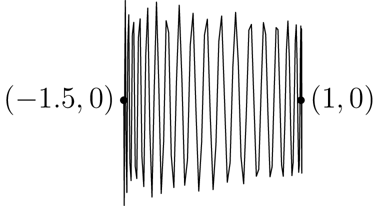

March 7th
Today I learned that determining if a single-variable (!) algebraic expression is identically $0$ is uncomputable. The main lemma is to create a function $\RR\to\RR^2$ with dense image, only using the closed-form expressions (functions made by $\op{id},\exp,\sin,\QQ,\pi,$ and addition/multiplication/composition of these). The main idea is that $y=\sin\left(x^2\right)$ oscillates with increasing frequency, so the graph of (say) $\sin\left(x^2\right)\pmod1$ would be dense in $[0,1]^2.$
However, we need to extend the $x$ and $y$ coordinates we are allowed. We need some kind of modular arithmetic, so we need to repeat over all intervals infinitely often, so we set $x(t)=t\sin t,$ which will relayer over our time intervals.
But now to cover with increasing vertical oscillations, $y(t)=t\sin t^2$ is no longer quite good enough because our $x$ speed is also increasing. So we choose $t\sin t^3.$ To make some of the computations easier, we actually choose the following function.
Lemma. The function \[\left(t\cos(2\pi t),t\sin\left(16\pi t^3\right)\right)\] has image dense in $\RR^2.$
The idea in the proof is that we can cover large intervals using the highly oscillatory $y$ coordinate, merely letting the $x$ coordinate move us around. Let $x(t)=t\cos(2\pi t),$ and $y(t)=t\sin\left(16\pi t^3\right).$ To give you an idea of how this behaves, here is the curve from $t=1$ to $t=1.5.$
We only consider time intervals like $[N,N+0.5]$ for sufficiently large $N\in\NN,$ and we are going to bound the horizontal length of a period of the $y$ coordinate to bound how dense our curve is. The reason for choosing $[N,N+0.5]$ is that $x(t)$ moves from $x(N)=N$ to $x(N+0.5)=-(N+0.5),$ and $y(t)$ has periods overcoming $N.$
Anyways, the start of periods of $y(t)$ occur at times when $16\pi t^3=2\pi k$ for some $k\in\ZZ,$ implying $t=\sqrt[3]k/2.$ So the horizontal displacement over a single period is\[d_k=\left|x\left(\frac{\sqrt[3]{k+1}}2\right)-x\left(\frac{\sqrt[3]k}2\right)\right|.\]This is somewhat obnoxious to bound directly, so we bound it stupidly. Note $x(t)$ is infinitely differentiable and whatnot, so we can write this displacement as\[d_k=\left|\int_{\sqrt[3]k/2}^{\sqrt[3]{k+1}/2}x'(t)\,dt\right|\le\int_{\sqrt[3]k/2}^{\sqrt[3]{k+1}/2}|x'(t)|\,dt.\]Now, $x'(t)=\cos(2\pi t)-2\pi t\sin(2\pi t),$ so $|x'(t)|\le1+2\pi t.$ In particular, all of our time values are positive because our time interval $N\in\NN$ is positive. Over the interval $[N,N+0.5],$ we can therefore absolutely bound $|x'(t)|\le1+2\pi(N+0.5).$ Thus,\[d_k\le\int_{\sqrt[3]k/2}^{\sqrt[3]{k+1}/2}(1+\pi+2\pi N)\,dt=\frac{\sqrt[3]{k+1}-\sqrt[3]k}2\cdot(1+\pi+2\pi N).\]To make computations easier, we note that $8N\ge1+\pi+2\pi N$ for $N\ge\frac{1+\pi}{8-2\pi}.$ So we can say\[d_k\le2N\left(\sqrt[3]{k+1}-\sqrt[3]k\right)\]for sufficiently large $N.$ Note the function $f(k)=\sqrt[3]{k+1}-\sqrt[3]k$ is strictly decreasing over $k\ge0$ because its derivative is $f'(k)=\frac1{3(k+1)^{2/3}}-\frac1{3k^{2/3}},$ which is shown to be negative after some rearranging. Anyways, the point is that\[\sqrt[3]{k+1}-\sqrt[3]k\le\sqrt[3]{N^3+1}-N\]because our periods needed to take place in $[N,N+0.5].$ We are assuming that a single period takes place in $[N,N+0.5],$ which requires $\sqrt[3]{N^3+1}\le N+0.5.$ But $(N+0.5)^3\ge N^3+1.5N^2,$ so $(N+0.5)^3\ge N^3+1$ for $N\ge1.$ So for sufficiently large $N,$\[d_N\le2N\left(\sqrt[3]{N^3+1}-N\right)\]over an entire interval in $[N,N+0.5].$ This bound is empirically huge, but it will work.
In particular, this displacement bound goes to $0$ as $N\to\infty.$ Indeed, we see\[L=\lim_{N\to\infty}2N\left(\sqrt[3]{N^3+1}-N\right)=2\lim_{x\to0^+}\frac{\sqrt[3]{(1/x)^3+1}-1/x}x.\]The limit now factors as\[\frac L2=\lim_{x\to0^+}x\cdot\frac{\sqrt[3]{x^3+1}-1}{x^3}.\]The $x$ of the limit vanishes. The fraction is the derivative of $g(x)=\sqrt[3]{x+1}$ at $0,$ which is $g'(0)=\frac13\cdot1^{-2/3} \lt \infty.$ So the entire limit goes to $0.$
This is all abstract, but the point is that, over the interval $[N,N+0.5],$ we cover the horizontal interval $[-N-0.5,N]\supseteq[-N,N]$ with vertical oscillations that are at least $N$ high and with frequency approaching $\infty.$ Showing density in $\RR^2$ from here is a matter of conversion.
Indeed, suppose we want to hit some arbitrary open ball $B((x_0,y_0),\varepsilon)$ in $\RR^2.$ Fix $N\in\NN$ a sufficiently large integer to consider the time interval $[N,N+0.5]$: ensure $N\ge|y_0|,|x_0\pm\varepsilon/2|$ so that we cover the point, and ensure that the maximum horizontal distance between vertical oscillations (named $d_N$) is less than $\varepsilon.$ The maximum horizontal distance goes to $0,$ so this is legal.
Now, the interval $[x_0-\varepsilon/2,x_0+\varepsilon/2]\subseteq[-N,N],$ and these $x$ coordinates are covered by $x(t)$ over $[N,N+0.5].$ Further, the horizontal distance over this interval is\[x_0+\varepsilon/2-x_0+\varepsilon/2=\varepsilon \gt d_N\]by construction of $N,$ so there must be a full vertical oscillation in $[x_0-\varepsilon/2,x_0+\varepsilon/2].$ Because a full period of $y(t)$ will cover at least $[-N,N]\supseteq[-|y_0|,|y_0|]\ni y_0,$ continuity of $y$ gives a time value $t_0\in[N,N+0.5]$ for which\[\begin{cases} x(t_0)\in[x_0-\varepsilon/2,x_0+\varepsilon/2], \\ y(t_0)=y_0.\end{cases}\]The distance between $(x,y)$ and $(x(t_0),y(t_0))$ is purely horizontal and bounded by $\varepsilon/2 \lt \varepsilon.$ So we are done. $\blacksquare$
If we wanted to be more formal about this, we could manually extract time values $t_1$ and $t_2$ for a full period of $y(t),$ look at the peaks of this period, see that they exceed $|y_0|$ in absolute value, and use continuity to argue for points with matching $y$ coordinate. I think the presented argument is sufficiently rigorous.
Anyways, as a corollary, we can extend this to arbitrary dimension.
Proposition. For positive integers $n,$ there exist closed-form functions $x_1,\ldots,x_n:\RR\to\RR$ such that $t\mapsto(x_1(t),\ldots,x_n(t))$ is dense in $\RR^n.$
For this, we induct. At $n=1,$ choose $x_1(t)=t.$ Further, $n=2$ case is given above; let $x(t)$ and $y(t)$ be the functions from the $n=2$ case.
Now suppose we have $n$ closed-form functions $x_1,\ldots,x_n$ with image dense in $\RR^n,$ and we want to make $n+1$ closed-form functions with image dense in $\RR^{n+1}.$ The idea is to split the coordinate $x_n$ into $x_n$ and $x_{n+1}$ with the $n=2$ case. That is, we claim that\[t\longmapsto\big(x_1(t),x_2(t),\ldots,x_{n-1}(t),\,x(x_n(t)),y(x_n(t))\big)\]has image dense in $\RR^{n+1}.$ Indeed, fix any ball $B((p_1,\ldots,p_{n+1}),\varepsilon)\subseteq\RR^{n+1}.$ Focusing on the final two coordinates, there is some time value $t_0$ such that $(x(t_0),y(t_0))$ is within $\varepsilon/2$ of $(p_n,p_{n+1}).$ Tracking the preimage of the ball $B((p_n,p_{n+1}),\varepsilon/2),$ there must be an entire interval $(t_1,t_2)\ni t_0$ which maps into $B((p_n,p_{n+1}),\varepsilon/2).$
It follows that we would like\[\begin{cases} (x_1(t),\ldots,x_{n-1}(t))\in B((p_1,\ldots,p_{n-1}),\varepsilon/2), \\ x_n(t)\in(t_1,t_2).\end{cases}\]Indeed, this would make the distance between $\big(x_1(t),\ldots,x_{n-1}(t),x(x_n(t)),y(x_n(t))\big)$ and $(p_1,\ldots,p_{n+1})$ be bounded above by $\sqrt{(\varepsilon/2)^2+(\varepsilon/2)^2} \lt \varepsilon,$ which is what we want. In particular, $(x(x_n(t)),y(x_n(t)))$ would have distance less than $\varepsilon/2$ from $(p_n,p_{n+1}).$
Anyways, we can combine the two desired conditions into asserting\[(x_1(t),\ldots,x_{n-1}(t),x_n(t))\in B((p_1,\ldots,p_{n-1}),\varepsilon/2)\times(t_1,t_2).\]This desired set is contains by the ball\[B\left(\left(p_1,\ldots,p_{n-1},\frac{t_1+t_2}2\right),\min\left(\frac\varepsilon2,\frac{t_2-t_1}2\right)\right),\]so because $(x_1(t),\ldots,x_n(t))$ has image dense in $\RR^n,$ there is a value of $t$ with output in that open ball. So we are done. $\blacksquare$
We also note that the inductive process presented above means that we can generate these dense functions computably. Our construction is really just\[(x(t),x(y(t)),x(y(y(t))),\ldots).\]This is somewhat important for rigor, but it doesn't matter too much.
Anyways, the punch-line is the following.
Theorem. There is no computable way to determine if a single-variable, closed-form algebraic expression is always nonnegative.
Back in the PROMYS 2021 logic seminar, we computably constructed a closed-form algebraic expression $E_e$ that was always nonnegative if and only if the polynomial $p_e$ had no integer roots. (Here, $p_e$ was the degree-$4$ representation of the square of a Hilbert's 10th polynomial, which has roots if and only if $\varphi_e(0)=0,$ where $\varphi_\bullet$ is an encoding of a Turing machine.) For concreteness, it was\[E_e(x_1,\ldots,x_n)=p_e(x_1,\ldots,x_n)+\sum_{\ell=1}^k|\sin(\pi x_\ell)|-\varepsilon,\]where\[\varepsilon=\exp\left(-1-\sum_{a,b,c,d=1}^n|p_{abcd}|(M+1)^4\right),\]with $p_{abcd}$ the coefficient of the $x_ax_bx_cx_d$ term of the polynomial $p_e.$ In particular, one can show that $E_e$ has any negative portions if and only if the polynomial $p_e$ has roots, via some aggressive bounding.
Anyways, we note now that we can let the variables $x_1,\ldots,x_n$ of $E_e$ be our functions $x_1(t),\ldots,x_n(t),$ which will turn the expression $E_e$ into one that has a single variable $t.$ Name this new expression $E_e'.$ Note that this transition can be done computably by pattern-matching the $x_\bullet$ with the computable representation of our dense functions given above.
It remains to show that the new expression $E_e'$ is ever negative if and only if $E_e$ is ever negative. This comes down to continuity.
-
If $E_e'$ is ever negative so that $t$ gives $E_e'(t) \lt 0,$ then the corresponding point $(x_1(t),\ldots,x_n(t))$ makes $E_e$ negative by construction.
-
If $E_e$ is ever negative, then the preimage $E_e^{-1}((-\infty,0))$ is non-empty. Because $E_e:\RR^n\to\RR$ is a continuous function (all closed-form functions are continuous), this preimage must be open. A non-empty open set contains a nontrivial ball (because balls are a basis), so there is a ball \[B((p_1,\ldots,p_n),\varepsilon)\] over which $E_e$ is negative. Because our path $(x_1(t),\ldots,x_n(t))$ is dense in $\RR^n,$ there is a time value $t$ which lives in that ball, which makes $E_e'(t)=E_e((x_1(t),\ldots,x_n(t))) \lt 0.$
Thus, $E_e\ge0$ if and only if $E_e'\ge0,$ which is what we wanted. $\blacksquare$
We have the following theorem, stated at the beginning, as a corollary.
Theorem. There is no computable way to determine if a single-variable, closed-form algebraic expression is equal to $0.$
If we could computably determine if a single-variable, closed-form expression $E(t)$ was equal to $0,$ then we could query if\[E(t)-|E(t)|\]is equal to $0,$ which is $0$ if and only if $E(t)\ge0.$ That is, an algorithm to determine if a closed-form expression is identically $0$ can be used for an algorithm to determine if a function is at least $0.$ The latter is not computable, so the former is not computable either. $\blacksquare$
As an aside, we note that if we could test $E(t)\ge0,$ then testing $E(t)\ge0$ and $-E(t)\ge0$ tests if $E(t)$ is identically $0.$ So testing if an expression is always nonnegative is just as hard as testing if an expression is identically $0.$
Anyways, I find this somewhat astounding. Determining if an expression is identically $0$ feels like it should be a relatively tractable problem: just test a whole bunch of values, maybe do some algebraic manipulation, and it should be doable. But it turns out that if you could determine if arbitrary (disgusting) expressions are identically $0,$ you could solve the halting problem.